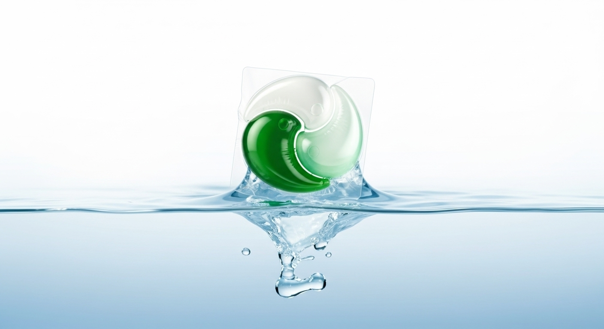
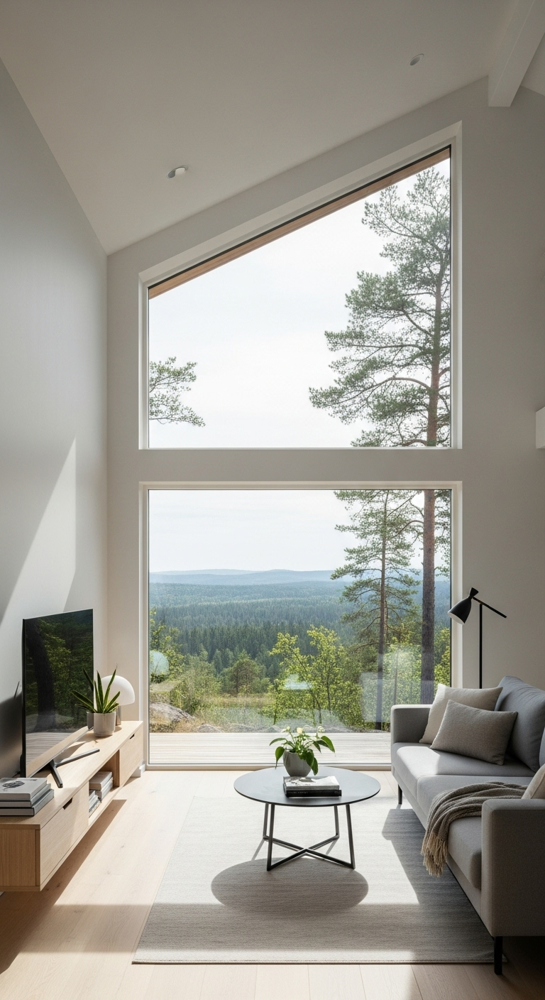

Sim. A fórmula foi pensada para atuar em todas as temperaturas.

LIMPEZA PODEROSA.
ZERO ESFORÇO.
Tecnologia que dissolve 100%
SUSTENTABILIDADE
Nossa tecnologia ecológica para um futuro mais limpo
Menos Plástico
Nossas embalagens usam 70% menos plástico que produtos comuns, reduzindo significativamente o impacto ambiental e a poluição dos oceanos.
100% Biodegradável
Desenvolvemos uma fórmula completamente biodegradável que não deixa resíduos químicos prejudiciais após o uso, protegendo nossos ecossistemas.
Vegan & Cruelty Free
Produtos 100% veganos e livres de testes em animais, certificados internacionalmente e desenvolvidos com ingredientes de origem ética.

Segurança Familiar
Segurança garantida para toda a família, incluindo crianças e bebês. Fórmula hipoalergênica e testada dermatologicamente para os mais sensíveis.
TRES PASSOS. SÓ POR NA MAQUINA
TRES PASSOS. SÓ POR NA MAQUINA
01
Pegue 1 cápsula (2 para cargas grandes/alta sujeira).
02
Coloque direto no tambor, antes das roupas.
03
Inicie o ciclo — a cápsula dissolve 100%
Resultados que você vê e sente
A tecnologia Sopy em cada cápsula.
Remove Manchas Profundas
PODER DAS ENZIMAS
Cores Vibrantes por Mais Tempo
PROTEÇÃO DAS FIBRAS
Tudo em Uma Cápsula
PRATICIDADE
Para Todas as Máquinas
ÁGUA FRIA E QUENTE
Clientes que amam a Sopy
Veja o que a galera diz sobre praticidade, perfume e resultado. Depoimentos reais de quem já usa no dia a dia.
Perguntas frequentes
Funciona em água fria?
Posso usar com roupas de bebê?
Sim. Siga o ciclo indicado pelo fabricante da máquina e da roupa.
Dissolve no ciclo rápido?
Sim, a película é hidrossolúvel e dissolve completamente.